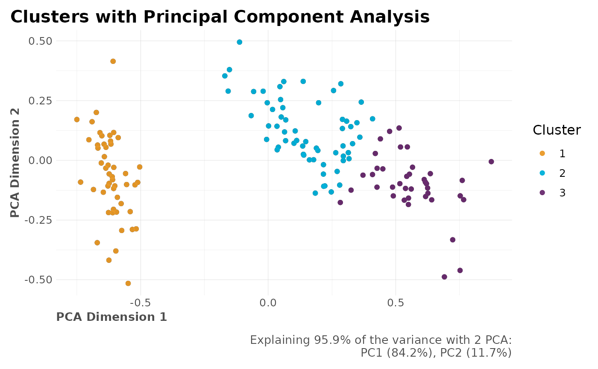
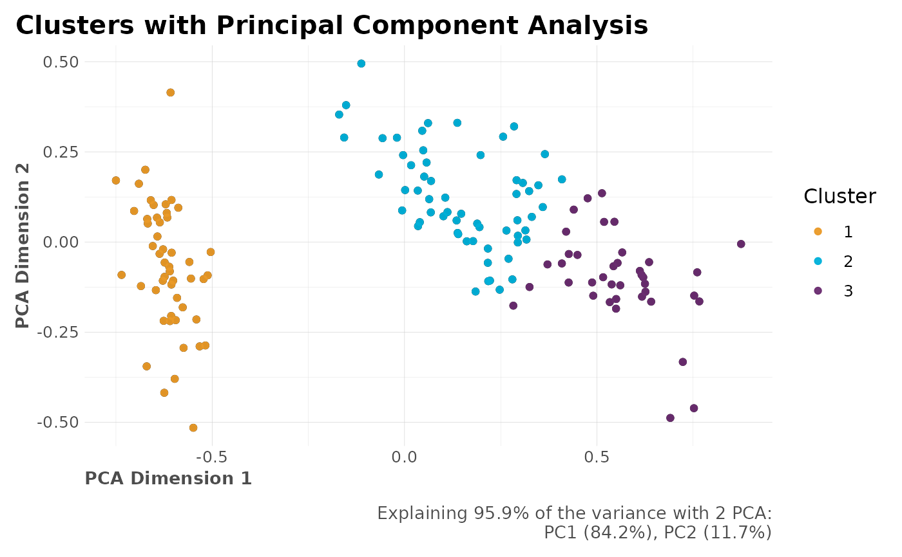

This function lets the user cluster a whole data.frame automatically. As you might know, the goal of kmeans is to group data points into distinct non-overlapping subgroups. If needed, one hot encoding will be applied to categorical values automatically with this function. For consideration: Scale/standardize the data when applying kmeans. Also, kmeans assumes spherical shapes of clusters and does not work well when clusters are in different shapes such as elliptical clusters.
Arguments
- df
Dataframe
- k
Integer. Number of clusters
- wss_var
Numeric. Used to pick automatic
kvalue, whenkisNULLbased on WSS variance while consideringlimitclusters. Values between (0, 1). Default value could be 0.05 to consider convergence.- limit
Integer. How many clusters should be considered?
- drop_na
Boolean. Should NA rows be removed?
- ignore
Character vector. Names of columns to ignore.
- ohse
Boolean. Do you wish to automatically run one hot encoding to non-numerical columns?
- norm
Boolean. Should the data be normalized?
- algorithm
character: may be abbreviated. Note that
"Lloyd"and"Forgy"are alternative names for one algorithm.- dim_red
Character. Select dimensionality reduction technique. Pass any of:
c("PCA", "tSNE", "all", "none").- comb
Vector. Which columns do you wish to plot? Select which two variables by name or column position.
- seed
Numeric. Seed for reproducibility
- quiet
Boolean. Keep quiet? If not, print messages.
- ...
Additional parameters to pass sub-functions.
Value
List. If no k is provided, contains nclusters and
nclusters_plot to determine optimal k given their WSS (Within
Groups Sum of Squares). If k is provided, additionally we get:
dfdata.frame with originaldfplusclustercolumnclustersinteger which is the same askfitkmeans object used to fit clustersmeansdata.frame with means and counts for each clustercorrelationsplot with correlations grouped by clustersPCAlist with PCA results (whendim_red="PCA")tSNElist with t-SNE results (whendim_red="tSNE")
See also
Other Clusters:
clusterOptimalK(),
clusterVisualK(),
reduce_pca(),
reduce_tsne()
Examples
Sys.unsetenv("LARES_FONT") # Temporal
data("iris")
df <- subset(iris, select = c(-Species))
# If dataset has +5 columns, feel free to reduce dimenstionalities
# with reduce_pca() or reduce_tsne() first
# Find optimal k
check_k <- clusterKmeans(df, limit = 10)
#> >>> Removed duplicate obserations: 1
check_k$nclusters_plot
 # Or pick k automatically based on WSS variance
check_k <- clusterKmeans(df, wss_var = 0.05, limit = 10)
#> >>> Removed duplicate obserations: 1
#> >> Auto selected k = 3 (clusters) based on minimum WSS variance of 5%
# You can also use our other functions:
# clusterOptimalK(df) and clusterVisualK(df)
# Run with selected k
clusters <- clusterKmeans(df, k = 3)
#> >>> Removed duplicate obserations: 1
names(clusters)
#> [1] "nclusters" "nclusters_plot" "df" "clusters"
#> [5] "fit" "means" "correlations" "PCA"
# Cross-Correlations for each cluster
plot(clusters$correlations)
# Or pick k automatically based on WSS variance
check_k <- clusterKmeans(df, wss_var = 0.05, limit = 10)
#> >>> Removed duplicate obserations: 1
#> >> Auto selected k = 3 (clusters) based on minimum WSS variance of 5%
# You can also use our other functions:
# clusterOptimalK(df) and clusterVisualK(df)
# Run with selected k
clusters <- clusterKmeans(df, k = 3)
#> >>> Removed duplicate obserations: 1
names(clusters)
#> [1] "nclusters" "nclusters_plot" "df" "clusters"
#> [5] "fit" "means" "correlations" "PCA"
# Cross-Correlations for each cluster
plot(clusters$correlations)
 # PCA Results (when dim_red = "PCA")
plot(clusters$PCA$plot_explained)
# PCA Results (when dim_red = "PCA")
plot(clusters$PCA$plot_explained)
 plot(clusters$PCA$plot)

plot(clusters$PCA$plot)
